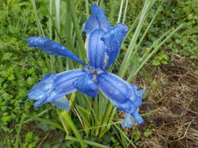
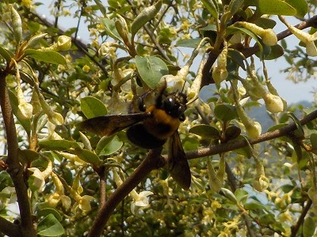
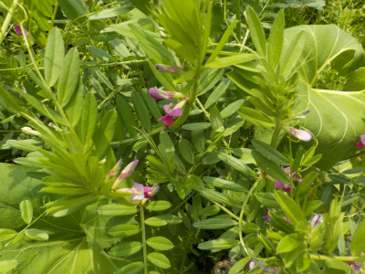
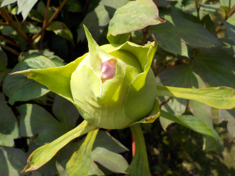
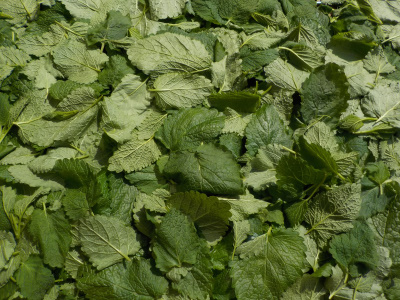
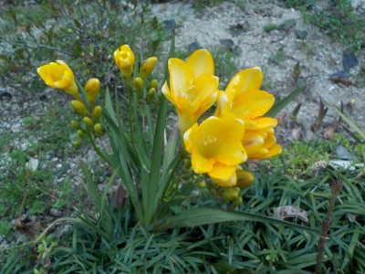

たぶんダッチアイリスですね。
2019/04/29
アヤメとかアイリスとか似てますよね。

これ何だっけって調べたらダッチアイリスがひっかかりました。
白い網目があるとか、花の元が黄色いとか白いとかで区別するって書いてあるところが多かったです。
2019/04/29
アヤメとかアイリスとか似てますよね。

これ何だっけって調べたらダッチアイリスがひっかかりました。
白い網目があるとか、花の元が黄色いとか白いとかで区別するって書いてあるところが多かったです。
2019/04/21
グミの周りは虫の羽音がずーっとしています。

この虫たちが果樹に行ってくれると嬉しいんだけどな。
2019/04/21
カラスノエンドウをよく見ます。

マメ科の植物は肥料になるとか言うのであってもいいかな。
でも花が咲いたら刈り取らないと栄養を種に取られるようです。
時間がある時に草刈りをしようと思います。
2019/04/21
あともうちょっとで咲きそうです。

楽しみです。
咲いたときに天気がいいといいな。
2019/04/21
収穫して洗って乾燥中です。

今年のレモンバームはなんか葉っぱが大きくて柔らかい気がする。
何かと交配してるかも。
香は普通にレモンバームなのでこのまま今年も育てるけど、秋になったら撤去しよう。
2019/04/07
地植えのフリージアが奇麗に咲いてます。

いつもよりも大きく、花が多いような。
ネットで検索したら耐寒性が弱いってありました。
地植えは向かない様ですね。いくつかはプランターに植え替えようと思います。
過去の日記
畑仕事じゃないよ。